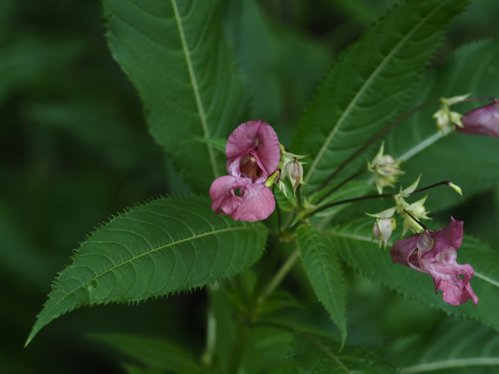

Vom Zierobjekt zum Problemfall
Das Drüsige Springkraut wurde im 19. Jahrhundert aus dem Himalaya als Gartenpflanze nach Europa gebracht. Seine 2–3 Meter hohen Stauden mit den exotischen rosa Blüten waren beliebt. Heute gilt es als invasiver Neophyt: Es verdrängt heimische Uferpflanzen, breitet sich rasend schnell aus und gehört in vielen Bundesländern zu den „unerwünschten Arten", die aktiv bekämpft werden.
Springkraut-Mechanismus
Der deutsche Name kommt von der spektakulären Samenausschleuderung: Reife Fruchtkapseln zerspringen bei Berührung explosionsartig in fünf Klappen und schleudern die Samen bis zu sieben Meter weit. Dieses „Springen" fühlt sich an, als hätte man eine kleine elektrische Pflanze in der Hand. Genau dieses Verbreitungstalent macht die Pflanze so erfolgreich invasiv.